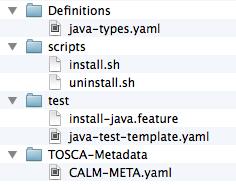

ALIEN 4 Cloud
ALIEN 4 Cloud
Cloud Service Archive
Every elements in TOSCA must be contained into a Cloud Service Archive (CSAR). A Cloud Service Archive is a zip file that contains definitions and any elements required for elements implementations.

The entry point for the Cloud Service Archive is the TOSCA-Metatata/CALM-META.yaml file. The META file defines the following elements.
| Property | Description | Required |
|---|---|---|
| name | Name of the archive. It must be unique through all existing archives. | Yes |
| version | Version of the archive. | Yes |
| license | The license for the archive. | No |
| created_by | Author of the archive. | No |
| dependencies | List of dependencies (including both name and version). Note: Import of base types is implicit and doesn’t have to be specified. | No |
| definitions | List of path to definitions files. The path are defined from the root of the archive. At least one definition file is required in a TOSCA archive. | Yes |
Example
name: "calm.java-types"
version: "1.0"
license: "Apache v2.0"
created_by: "FastConnect"
dependencies:
- name: "tosca-base-types"
version: 1.0
definitions:
- "/Definitions/java-types.yaml"Test support is currently not managed but a Jenkins plugin will be released soon.